# Libraries
library(readr)
library(dplyr)
library(ggplot2)
library(tidyverse)
library(factoextra)
library(dbscan)
library(fpc)
library(tibble)
# Path
path <- "~/Downloads/"Lab 6 - Unsupervised Learning - Cluster Analysis
Setup
Libraries & Paths
1. Load & Cleanse Data
df_raw <- read.csv(paste0(path, "ecommerce2.csv"))
print(sum(duplicated(df_raw)))[1] 3print(colSums(is.na(df_raw))) CustomerID Age Gender Country Source
20 0 0 0 0
OrderID Quantity TransactionDate ProductID Price
0 0 0 0 0
Category
0 Aproach to Issues
After using functions to find duplicates and missing values, and skimming through the data for anomalies, I noticed there were a few duplicates and some missing values. I want to use the unique function to keep 1 occurrence of each duplicated row. Since there are only 20 missing values out of 22459, I believe it is safe from a business standpoint to omit these rows, since CustomerID is necessary.
df_raw <- unique(df_raw)
df_raw <- na.omit(df_raw)
print(sum(duplicated(df_raw)))[1] 0print(colSums(is.na(df_raw))) CustomerID Age Gender Country Source
0 0 0 0 0
OrderID Quantity TransactionDate ProductID Price
0 0 0 0 0
Category
0 2. RFR Feature Engineering
RFR <- df_raw %>%
group_by(CustomerID) %>%
summarise(
Age = max(Age),
Gender_M = as.integer(first(Gender) == "M"),
Num_Orders = length(unique(OrderID)),
Total_Quantity = sum(Quantity),
Recency = min(as.numeric(Sys.Date() - as.Date(TransactionDate, format = "%m/%d/%y"))),
Customer_Duration = max(as.numeric(Sys.Date() - as.Date(TransactionDate, format = "%m/%d/%y"))),
Avg_Transaction = sum(Price * Quantity) / length(unique(OrderID)),
Total_Spent = sum(Price * Quantity)
)
head(RFR)# A tibble: 6 × 9
CustomerID Age Gender_M Num_Orders Total_Quantity Recency Customer_Duration
<int> <int> <int> <int> <int> <dbl> <dbl>
1 24 34 0 1 2 600 600
2 29 66 1 1 3 594 594
3 62 14 0 1 10 545 545
4 69 33 1 1 1 640 640
5 75 69 0 1 3 640 640
6 123 29 0 1 1 650 650
# ℹ 2 more variables: Avg_Transaction <dbl>, Total_Spent <dbl>3. EDA & Scaling
Age
ggplot(RFR, aes(y = Age)) +
geom_boxplot()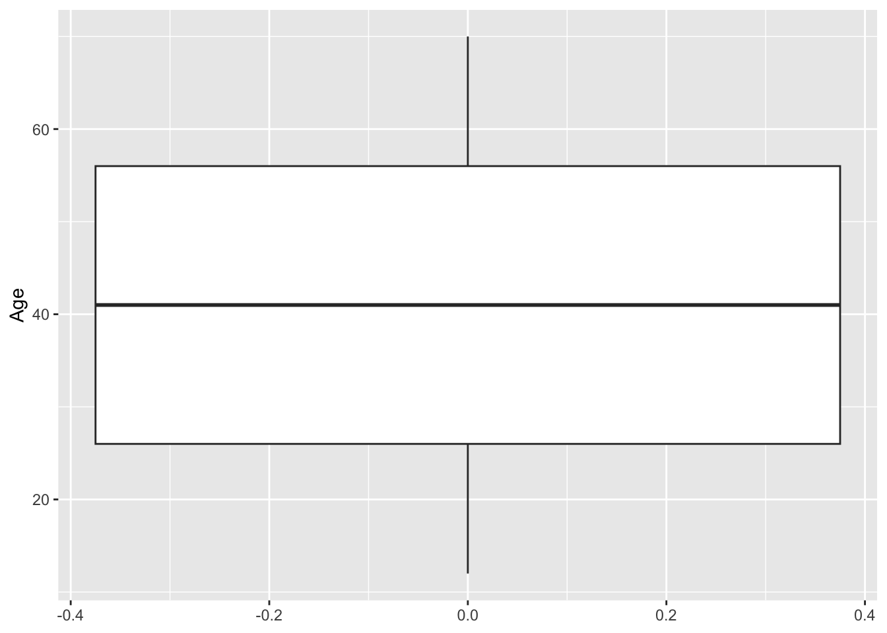
Num Orders
ggplot(RFR, aes(x = Num_Orders)) +
geom_histogram()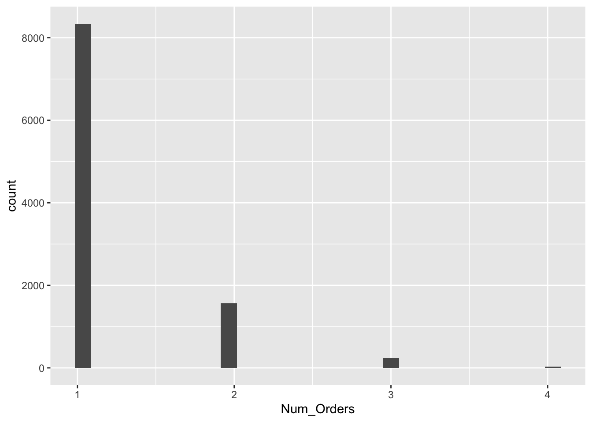
Total Spent
ggplot(RFR, aes(x = Total_Spent)) +
geom_histogram(binwidth = 150)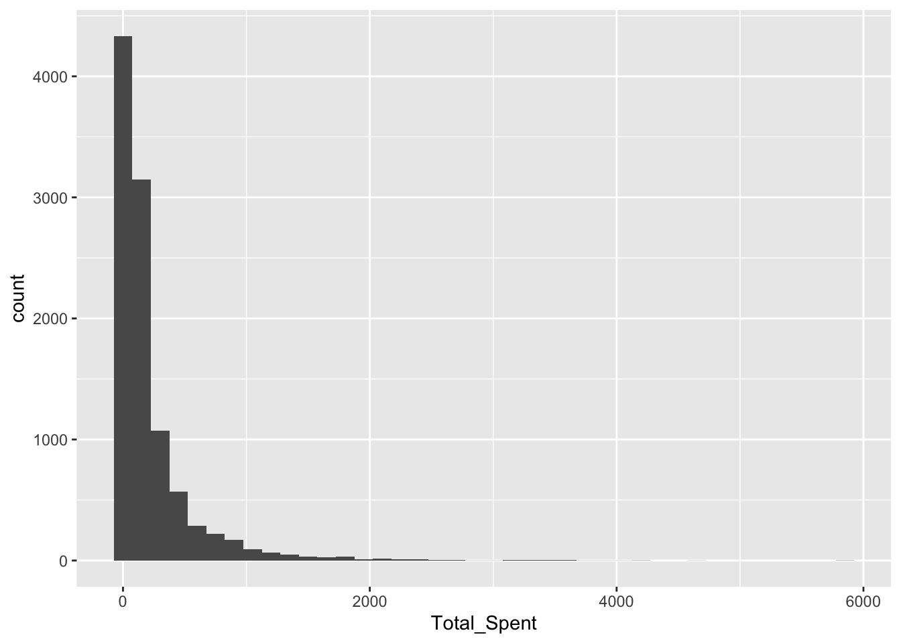
Total Quantity
ggplot(RFR, aes(x = Total_Quantity)) +
geom_histogram(binwidth = 5)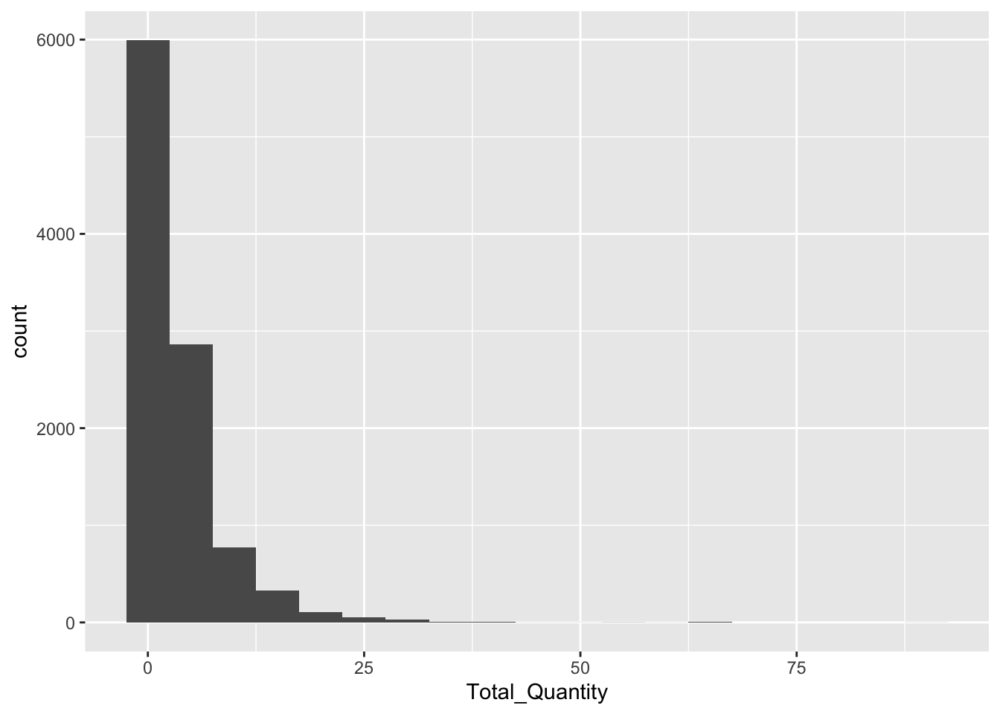
Avg Transaction
ggplot(RFR, aes(x = Avg_Transaction)) +
geom_histogram(binwidth = 150)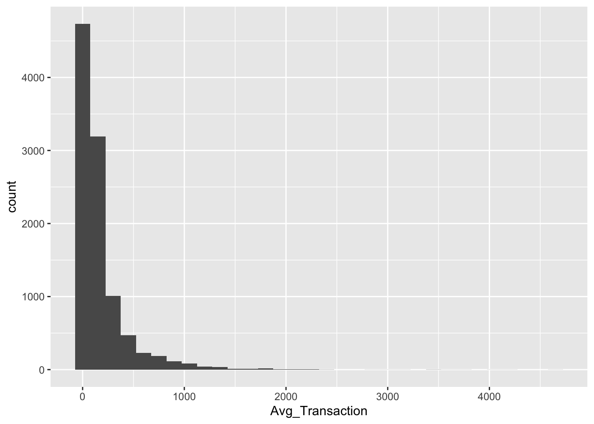
Customer Duration
ggplot(RFR, aes(y = Customer_Duration)) +
geom_boxplot()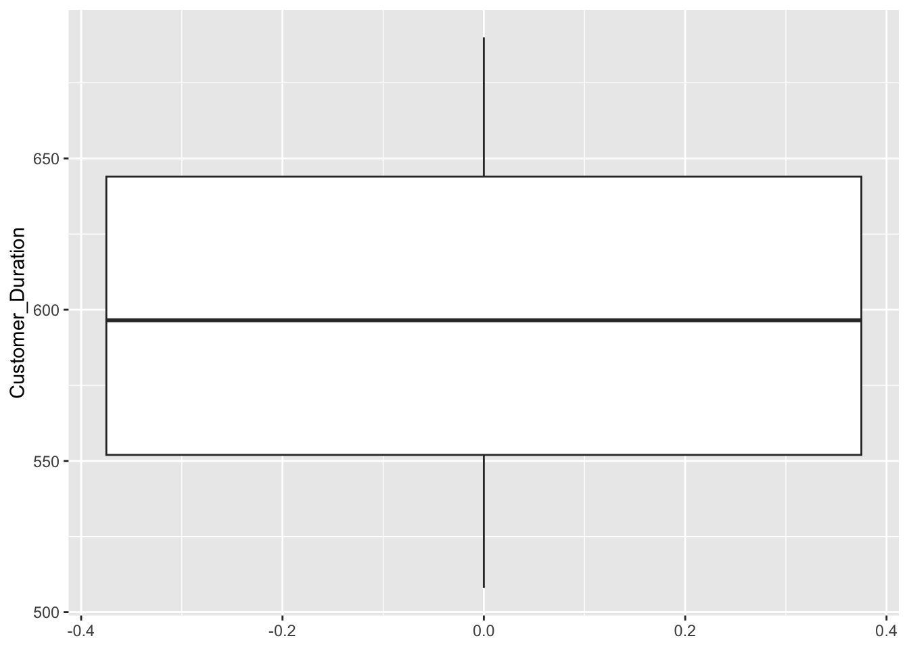
Recency
ggplot(RFR, aes(x = Recency)) +
geom_histogram(binwidth = 10)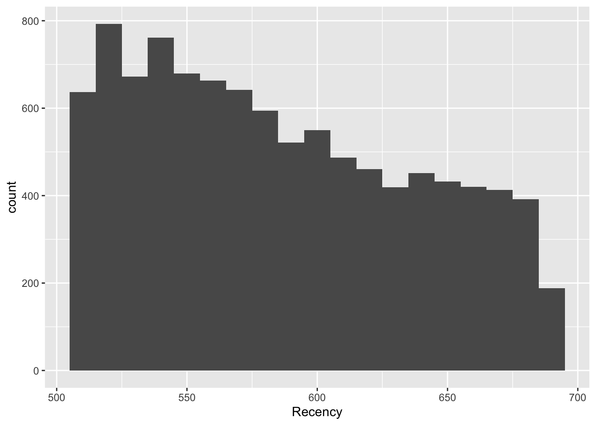
Explanation
Most features, particularly those directly related to the transaction, are heavily right-skewed. There is a common shape of the large majority of customers falling in a bucket close to 0 or minimal, and then the rest are extremely spread out. This shows that a strong number of outliers are present. This could affect clustering because if there are enough outliers, they will be clustered together,
Scaling
RFR_Master <- RFR
RFR <- RFR %>%
column_to_rownames(var = "CustomerID")
RFR_scaled <- as.data.frame(scale(RFR))
head(RFR) Age Gender_M Num_Orders Total_Quantity Recency Customer_Duration
24 34 0 1 2 600 600
29 66 1 1 3 594 594
62 14 0 1 10 545 545
69 33 1 1 1 640 640
75 69 0 1 3 640 640
123 29 0 1 1 650 650
Avg_Transaction Total_Spent
24 154.77 154.77
29 150.87 150.87
62 364.44 364.44
69 15.00 15.00
75 90.00 90.00
123 10.30 10.30head(RFR_scaled) Age Gender_M Num_Orders Total_Quantity Recency Customer_Duration
24 -0.4109799 -0.988422 -0.436987 -0.3530033 0.2570239 0.04397349
29 1.4756250 1.011614 -0.436987 -0.1438161 0.1422245 -0.06936852
62 -1.5901079 -0.988422 -0.436987 1.3204937 -0.7953040 -0.99499500
69 -0.4699363 1.011614 -0.436987 -0.5621904 1.0223532 0.79958694
75 1.6524942 -0.988422 -0.436987 -0.1438161 1.0223532 0.79958694
123 -0.7057619 -0.988422 -0.436987 -0.5621904 1.2136855 0.98849030
Avg_Transaction Total_Spent
24 -0.09156361 -0.1834728
29 -0.10574838 -0.1943090
62 0.67103143 0.3990981
69 -0.59992393 -0.5718256
75 -0.32713990 -0.3634371
123 -0.61701840 -0.58488464. Clustering Exercise A (k=2)
Explanation
Because K must be known, I chose K-Means for speed and simplicity. This algorithm works great with a pre-determined K and is easy to understand.
Modeling
set.seed(42)
kmodel1 <- kmeans(RFR_scaled, centers=2, nstart=20)
clusterA <- kmodel1$cluster
RFR_Master$clusterA <- clusterA Plot
fviz_cluster(kmodel1, data = RFR_scaled,
ellipse.type = "convex")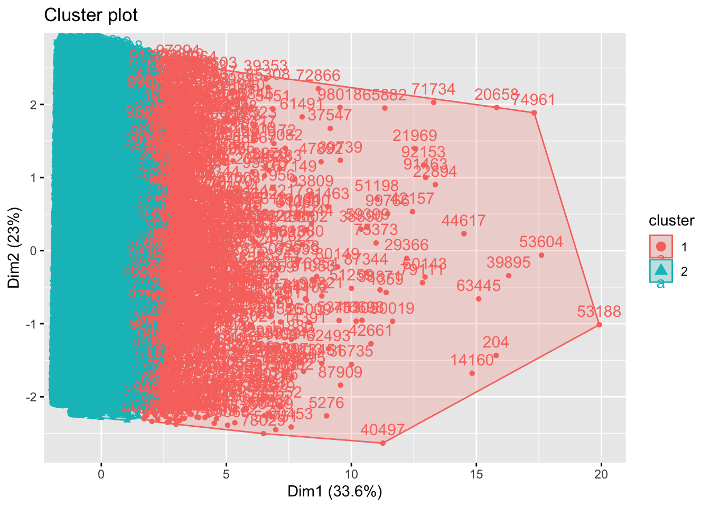
clusterA_groups <- RFR_Master %>%
group_by(clusterA) %>%
summarise(mean_Age = mean(Age),
mean_Gender_M = mean(Gender_M),
mean_Num_Orders = mean(Num_Orders),
mean_Total_Quantity = mean(Total_Quantity),
mean_Recency = mean(Recency),
mean_Customer_Duration = mean(Customer_Duration),
mean_Avg_Transaction = mean(Avg_Transaction),
mean_Total_Spent = mean(Total_Spent)
)
head(clusterA_groups)# A tibble: 2 × 9
clusterA mean_Age mean_Gender_M mean_Num_Orders mean_Total_Quantity
<int> <dbl> <dbl> <dbl> <dbl>
1 1 41.3 0.548 1.53 14.6
2 2 40.9 0.488 1.17 2.50
# ℹ 4 more variables: mean_Recency <dbl>, mean_Customer_Duration <dbl>,
# mean_Avg_Transaction <dbl>, mean_Total_Spent <dbl>Description
After observing the feature averages of K1 and K2, there are some clear differences. Simply put, K1 represents customers who have higher transaction/purchase history. The K2 grouping represents less involved customers. Some clear examples include total quantity (K1: 14.6, K2: 2.5) and total spent (K1: $1046.6, K2: $131.1).
5. Optimal-k Determination & Clustering B
Optimizing K
# elbow
fviz_nbclust(RFR_scaled, kmeans, method = "wss", nstart = 10)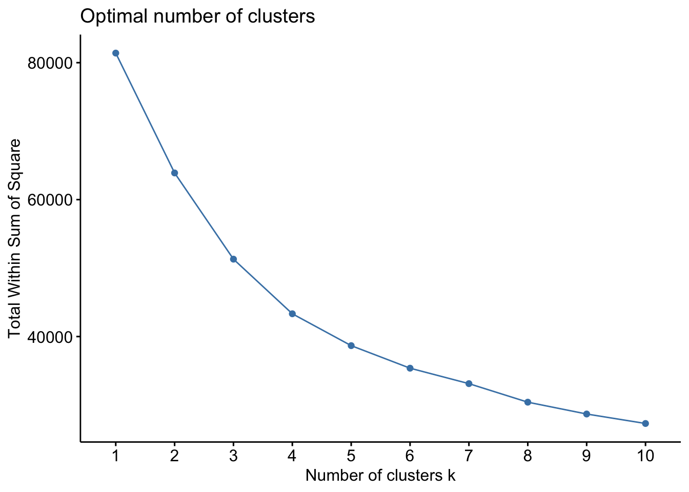
# silhouette
fviz_nbclust(RFR_scaled, kmeans, method = "silhouette", nstart = 10)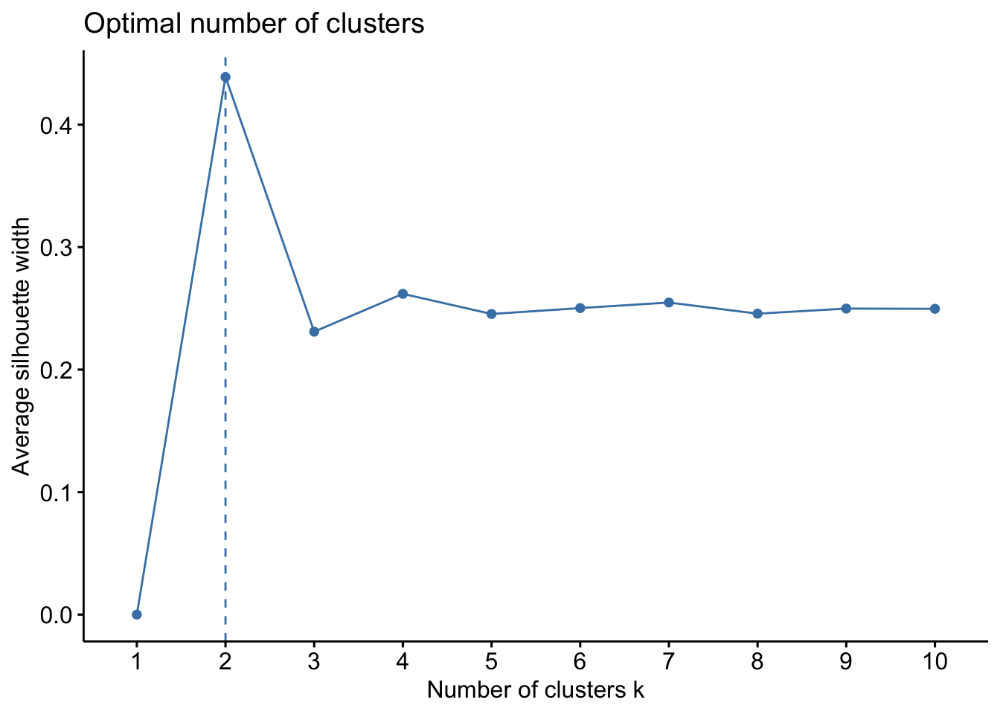
Explanation & Recommendation
I chose 2 techniques that offer different advantages. I chose the elbow technique to offer a visual. This way it is easier to explain and understand. However, it is also more subjective. For my second technique, I chose silhouette. This technique offers a more objective result. The elbow ploit suggested 3 or 4. The silhouette technique suggested a lower number of 2, potentially 3. Considering these two results and the manager’s intuition, I settled on K being 3.
Model
kmodel2 <- kmeans(RFR_scaled, centers=3, nstart=20)
clusterB <- kmodel2$cluster
RFR_Master$clusterB <- clusterB Plot
fviz_cluster(kmodel2, data = RFR_scaled,
ellipse.type = "convex")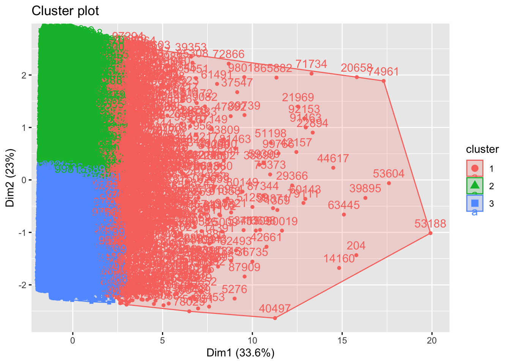
clusterB_groups <- RFR_Master %>%
group_by(clusterB) %>%
summarise(mean_Age = mean(Age),
mean_Gender_M = mean(Gender_M),
mean_Num_Orders = mean(Num_Orders),
mean_Total_Quantity = mean(Total_Quantity),
mean_Recency = mean(Recency),
mean_Customer_Duration = mean(Customer_Duration),
mean_Avg_Transaction = mean(Avg_Transaction),
mean_Total_Spent = mean(Total_Spent)
)
head(clusterB_groups)# A tibble: 3 × 9
clusterB mean_Age mean_Gender_M mean_Num_Orders mean_Total_Quantity
<int> <dbl> <dbl> <dbl> <dbl>
1 1 41.3 0.543 1.56 15.4
2 2 41.0 0.503 1.18 2.59
3 3 40.9 0.478 1.17 2.58
# ℹ 4 more variables: mean_Recency <dbl>, mean_Customer_Duration <dbl>,
# mean_Avg_Transaction <dbl>, mean_Total_Spent <dbl>Description
Segmenting into 3 groups offered some new insights compared to Cluster A. Cluster B was very similar because ot segmented K1 as high volume customers, while identifying K2 and K3 as lower volume customers. Interestingly, there were very few differences in K2 and K3 customers other than date features. Those clustered in K3 had more recent activity and customer status.
6. Outlier-Robust Clustering C
kNNdistplot(RFR_scaled, k = 5)
abline(h=1.1, lty=2)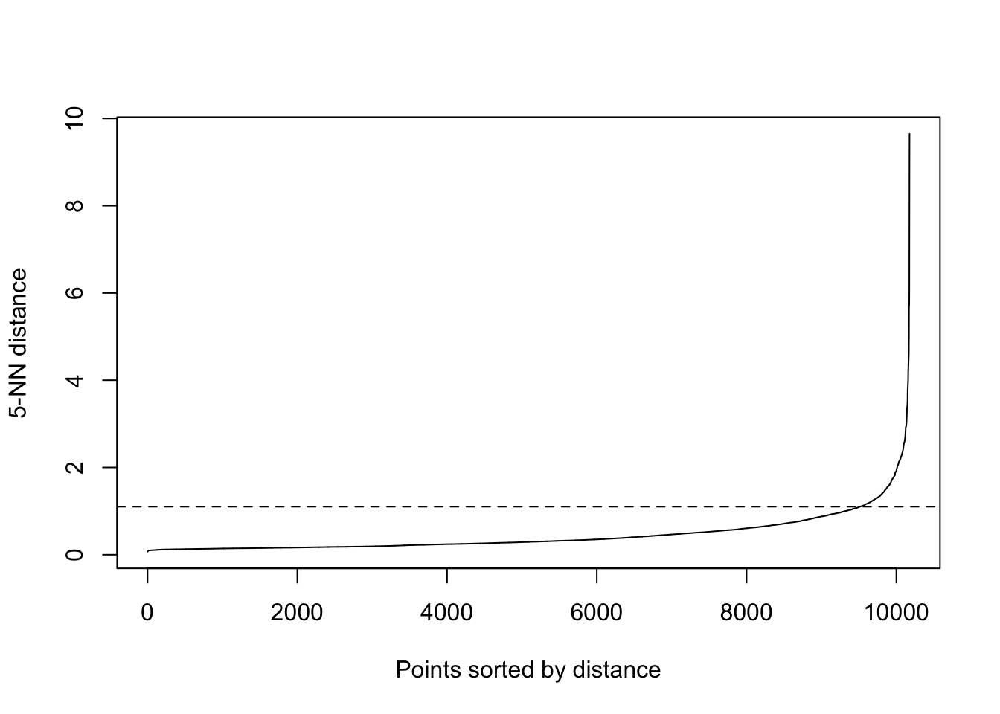
# dbscan model
dbmodel <- dbscan(RFR_scaled, eps=1.1, MinPts=5)
clusterC <- dbmodel$cluster
RFR_Master$clusterC <- clusterC Plot
fviz_cluster(dbmodel,
data = RFR_scaled,
show.clust.cent = TRUE,
outlier.color = 'black',
ellipse.type = 'confidence'
)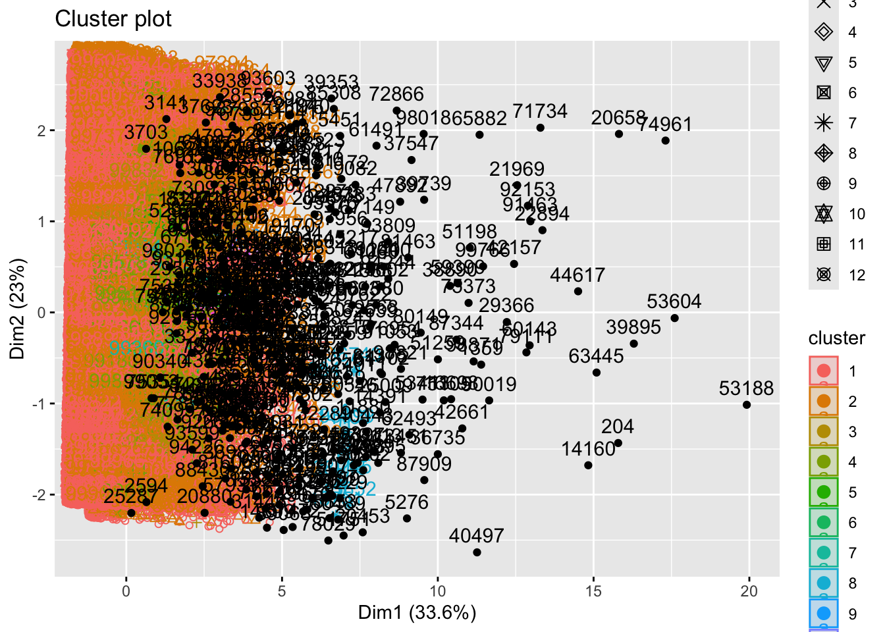
Reflection
Customers that were grouped as K0 or outliers were actually very similar to those in the KMeans K1 groups. This means that the model considered the high-activity customers to be outliers. This may be somewhat misleading because this is a substantial group.
7. Combine & Inspect Assignments
head(df_raw, 10) CustomerID Age Gender Country Source OrderID Quantity
1 13833 45 F China Search 17103 1
2 13833 45 F China Search 17103 1
4 60200 26 M Brasil Search 75511 1
5 60200 26 M Brasil Search 75511 1
6 40828 26 F United States Organic 51157 1
8 75949 46 M United States Search 94881 1
9 88808 23 F China Search 110856 1
10 88808 23 F China Search 110856 1
11 80482 28 M France Facebook 100652 1
12 64127 57 M Japan Search 80314 1
TransactionDate ProductID Price Category
1 12/31/23 0:27 4715 58.00 Jeans
2 12/31/23 0:27 12397 30.95 Intimates
4 12/31/23 1:02 23975 55.00 Outerwear & Coats
5 12/31/23 1:02 16444 44.99 Tops & Tees
6 12/31/23 1:19 6699 20.00 Shorts
8 12/31/23 2:05 21683 47.00 Pants
9 12/31/23 2:13 10465 42.99 Intimates
10 12/31/23 2:13 7601 56.39 Blazers & Jackets
11 12/31/23 2:16 18157 62.36 Active
12 12/31/23 2:43 19452 39.99 Sweatershead(RFR_Master, 10)# A tibble: 10 × 12
CustomerID Age Gender_M Num_Orders Total_Quantity Recency Customer_Duration
<int> <int> <int> <int> <int> <dbl> <dbl>
1 24 34 0 1 2 600 600
2 29 66 1 1 3 594 594
3 62 14 0 1 10 545 545
4 69 33 1 1 1 640 640
5 75 69 0 1 3 640 640
6 123 29 0 1 1 650 650
7 162 28 1 1 1 515 515
8 167 39 1 1 2 656 656
9 173 50 1 1 3 552 552
10 175 38 0 1 8 540 540
# ℹ 5 more variables: Avg_Transaction <dbl>, Total_Spent <dbl>, clusterA <int>,
# clusterB <int>, clusterC <dbl>RFR_Master <- df_raw %>%
group_by(CustomerID) %>%
summarise(
Age = max(Age),
Gender_M = as.integer(first(Gender) == "M"),
Num_Orders = length(unique(OrderID)),
Total_Quantity = sum(Quantity),
Recency = min(as.numeric(Sys.Date() - as.Date(TransactionDate, format = "%m/%d/%y"))),
Customer_Duration = max(as.numeric(Sys.Date() - as.Date(TransactionDate, format = "%m/%d/%y"))),
Avg_Transaction = sum(Price * Quantity) / length(unique(OrderID)),
Total_Spent = sum(Price * Quantity),
Country = last(Country)
)
RFR_Master$clusterA <- clusterA
RFR_Master$clusterB <- clusterB
RFR_Master$clusterC <- clusterC
head(df_raw, 10) CustomerID Age Gender Country Source OrderID Quantity
1 13833 45 F China Search 17103 1
2 13833 45 F China Search 17103 1
4 60200 26 M Brasil Search 75511 1
5 60200 26 M Brasil Search 75511 1
6 40828 26 F United States Organic 51157 1
8 75949 46 M United States Search 94881 1
9 88808 23 F China Search 110856 1
10 88808 23 F China Search 110856 1
11 80482 28 M France Facebook 100652 1
12 64127 57 M Japan Search 80314 1
TransactionDate ProductID Price Category
1 12/31/23 0:27 4715 58.00 Jeans
2 12/31/23 0:27 12397 30.95 Intimates
4 12/31/23 1:02 23975 55.00 Outerwear & Coats
5 12/31/23 1:02 16444 44.99 Tops & Tees
6 12/31/23 1:19 6699 20.00 Shorts
8 12/31/23 2:05 21683 47.00 Pants
9 12/31/23 2:13 10465 42.99 Intimates
10 12/31/23 2:13 7601 56.39 Blazers & Jackets
11 12/31/23 2:16 18157 62.36 Active
12 12/31/23 2:43 19452 39.99 Sweatershead(RFR_Master, 10)# A tibble: 10 × 13
CustomerID Age Gender_M Num_Orders Total_Quantity Recency Customer_Duration
<int> <int> <int> <int> <int> <dbl> <dbl>
1 24 34 0 1 2 600 600
2 29 66 1 1 3 594 594
3 62 14 0 1 10 545 545
4 69 33 1 1 1 640 640
5 75 69 0 1 3 640 640
6 123 29 0 1 1 650 650
7 162 28 1 1 1 515 515
8 167 39 1 1 2 656 656
9 173 50 1 1 3 552 552
10 175 38 0 1 8 540 540
# ℹ 6 more variables: Avg_Transaction <dbl>, Total_Spent <dbl>, Country <chr>,
# clusterA <int>, clusterB <int>, clusterC <dbl>Observations
It was rare to find an odd set of cluster groups, but I did observe a customer (ID:3703) had groups A:2, B:2, and C:0. I found this to be odd because nearly all of the outliers, C:0, were also in the high value groups, A:1 and B:1. So, this customer is apparently an outlier and a low spender. The unique feature they have is some very low transactions.
8. PCA for Cluster Validation
PCA is a very useful tool to use for technical explanations. It takes an objective measurement without taking into consideration a model to compare the components. It is helpful to analyze the visuals of PCA and how each arrow’s length can show the strength of the feature.
data_pca <- princomp(RFR_scaled,
cor=TRUE)
summary(data_pca)Importance of components:
Comp.1 Comp.2 Comp.3 Comp.4 Comp.5
Standard deviation 1.6404150 1.3557930 1.0457294 1.0009026 0.9934042
Proportion of Variance 0.3363702 0.2297718 0.1366937 0.1252257 0.1233565
Cumulative Proportion 0.3363702 0.5661420 0.7028357 0.8280615 0.9514180
Comp.6 Comp.7 Comp.8
Standard deviation 0.52687256 0.243157171 0.227895149
Proportion of Variance 0.03469934 0.007390676 0.006492025
Cumulative Proportion 0.98611730 0.993507975 1.000000000# scree plot
fviz_eig(data_pca, addlabels=TRUE)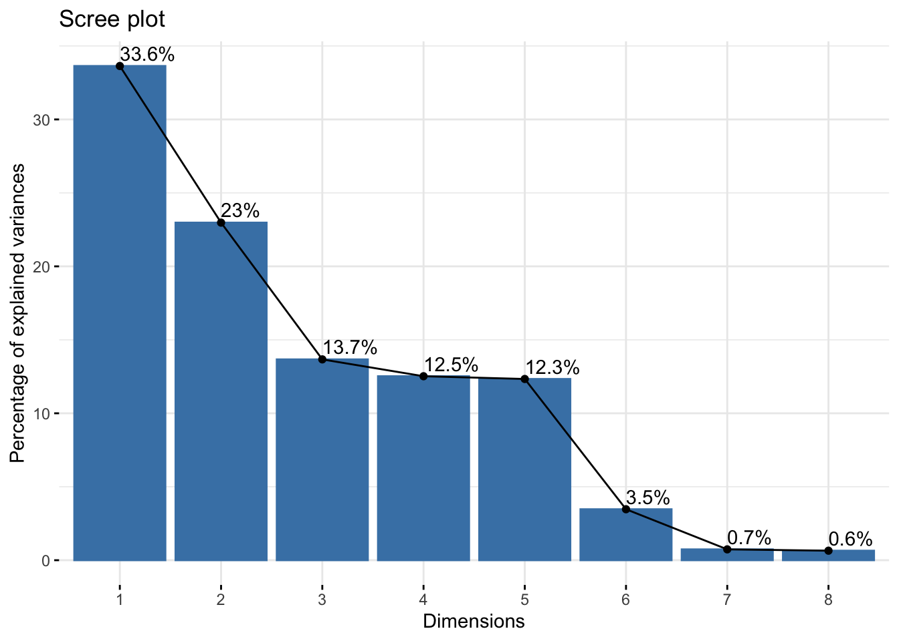
4 principal components would explain at least 75% of the variance
fviz_contrib(data_pca, choice="var", axes=1)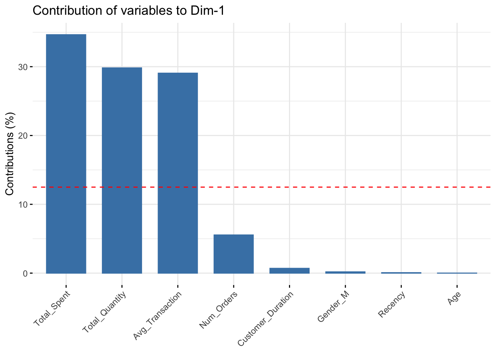
fviz_contrib(data_pca, choice="var", axes=2)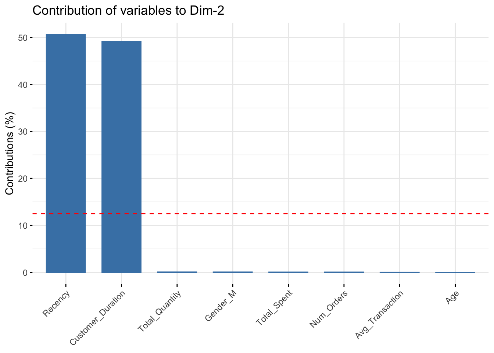
fviz_contrib(data_pca, choice="var", axes=3)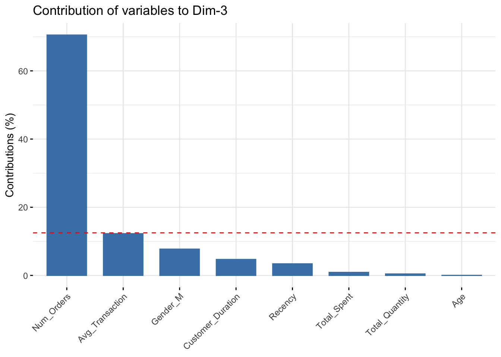
fviz_contrib(data_pca, choice="var", axes=4)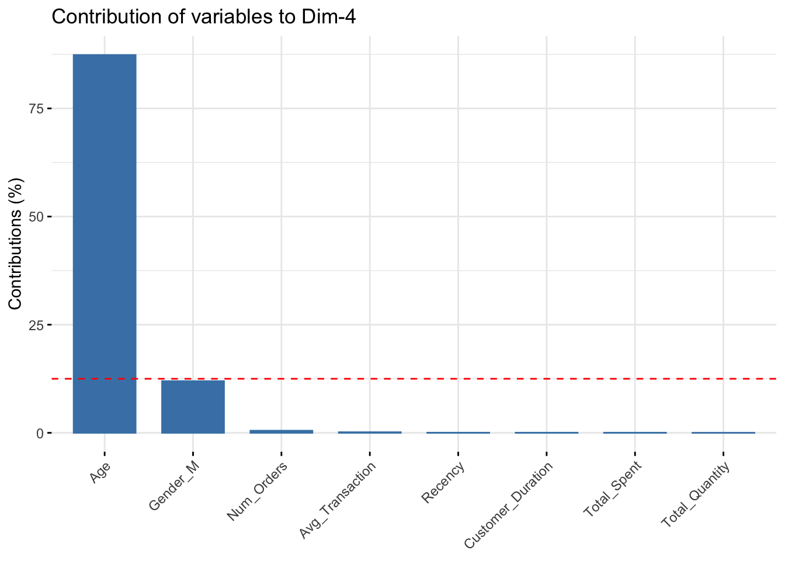
Major Features
- PC1: Total_Spent, Total_Quantity, Avg_Transaction
- PC2: Recency, Customer_Duration
- PC3:
- PC4:
9. Algorithm Comparison & Recommendation
dist_mat <- dist(RFR_scaled, method = "euclidean")
# cluster stats
stats_A <- cluster.stats(d=dist_mat,
clustering = clusterA
)
stats_B <- cluster.stats(d=dist_mat,
clustering = clusterB
)
stats_C <- cluster.stats(d=dist_mat,
clustering = clusterC
)
metrics_A <- tibble(
Method = "KMeans (2)",
Silhouette = stats_A$avg.silwidth,
Calinski_Harabasz = stats_A$ch,
)
metrics_B <- tibble(
Method = "KMeans (3)",
Silhouette = stats_B$avg.silwidth,
Calinski_Harabasz = stats_B$ch,
)
metrics_C <- tibble(
Method = "DBSCAN",
Silhouette = stats_C$avg.silwidth,
Calinski_Harabasz = stats_C$ch,
)
metrics_comparison <- bind_rows(metrics_A, metrics_B, metrics_C)
head(metrics_comparison)# A tibble: 3 × 3
Method Silhouette Calinski_Harabasz
<chr> <dbl> <dbl>
1 KMeans (2) 0.439 2787.
2 KMeans (3) 0.231 2984.
3 DBSCAN 0.180 487.Recommendation
After reviewing the quantitative metrics and PCA alignment of each of the three models completed in this study, I have a recommendation, despite the strengths and weaknesses of each. K-Means model one with k=3 was a very strong start. It was a fast and simple model that used a K that was not determined by any algorithmic recommendation. It segmented the customers into high-value and low-value customers. The second K-Means model used the help of 2 techniques to determine its K value. It segmented each customer into high and low value customers, and then it split the low-value customers into more and less recent customers. Finally, the DBSCAN model split the customers into more groups and labeled many as outliers. It is clear to see from the metrics that the first K-Means model scored the best. After reviewing the data, the highest contrast was always found between the dollar amount features. K-Means model 1 rightly split the customers into 2 groups, and no more. There was simply too little segmentation variance when more groups were added. - Recommendation: Model 1
10. Reflection & Next Steps
Potential Bias
I believe this study has shown that using clustering can inadvertently bias marketing. This data set clearly has a set of customers who are very active and spend a lot on transactions and have placed many orders. This was originally shown in the right-skewed graphs. Then each K-Means segmentation proved this point further. I believe segmentation was very useful and helpful to this point. However, when this clear, large group was labeled as outliers, I realized there might be some bias. If these people are determined to be rare and not indiactive of the dataset, it could leave less focus for loyal customers. This could cause people who have been long-term high purchasers (customers to want to retain) to lose interest in the store. A safeguard to protect against this would be to decrease the chance of labeling too many as outliers in a set. Although this is very helpful at times, it should be emphasized that segmentation should consider as many as possible.
Monitoring Stability
It would be very important to monitor these clusters on a regular basis. A lot can change quickly. I think one of the biggest reasons to recluster would be when a store change or news has gone public. The months following impactful decisions have the most potential to change the groupings. I think it is important to check the number of people be group regularly. It would also be very helpful to observe the graphs (especially silhouette) to see if there are large visual changes to the suggested number of groups.
Executive Summary
- Using the provided data on customers and their transaction history, many strategies were used to find the ideal number of groups, customers in those groups, and what factors play the biggest real in determining those groups.
- The best strategy found that customers were best split in half into 2 groups: high-value and low-value. Factors most impactul on this split were the number of orders and .